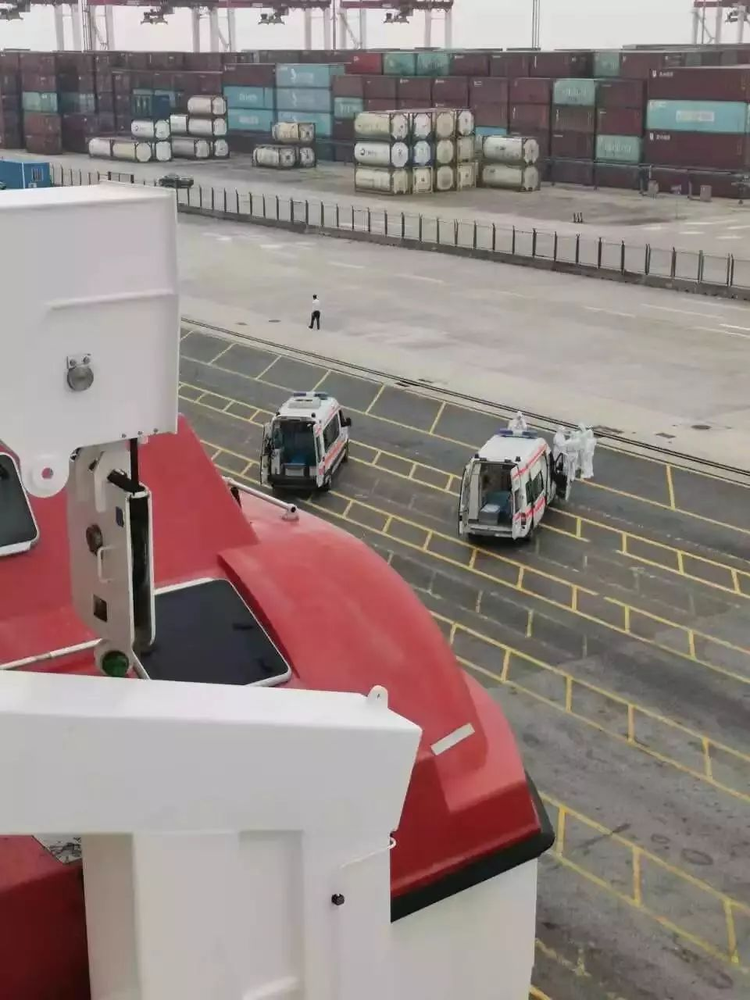
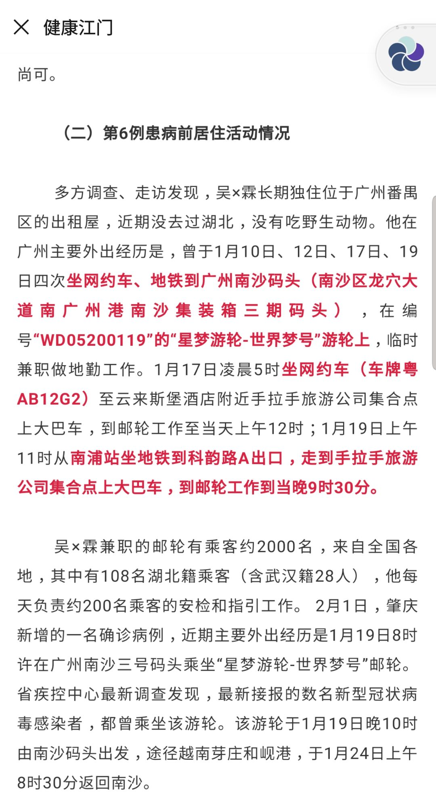
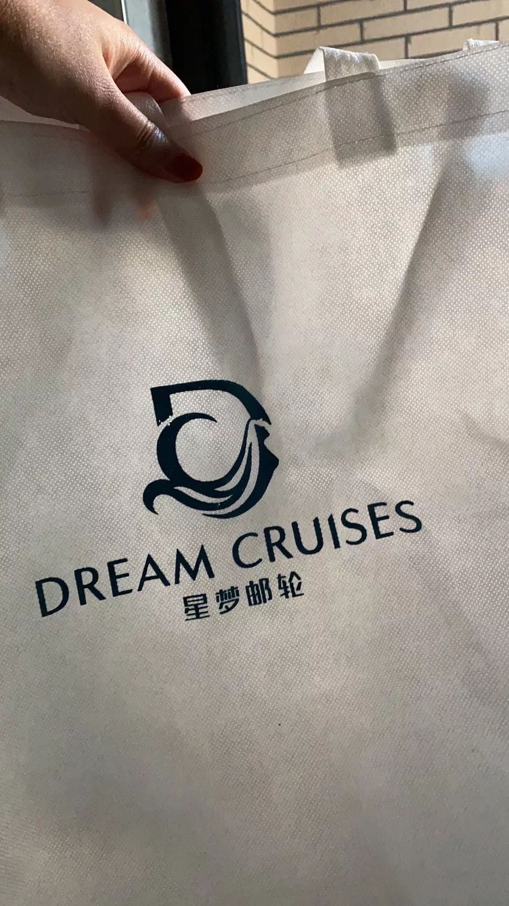

超200万只假飘安口罩流入市场，涉事“黑”作坊被查
原文链接 备份链接 记者从河南省长垣市公安局获悉，涉事“黑”作坊负责人已被警方刑事拘留。然而，在警方切断了这一条假冒伪劣口罩的生产线后，湖南、湖北、河南、安徽、辽宁等地有消费者反映，自己购买到疑似假冒的“飘安”口罩。 全文3354字，阅读 …
***** *****
*****
*****韩昕佟当时还不知道，这些将和她共同度过六天五夜的数千名乘客中，有108名来自湖北，其中28人来自武汉。*****

1月20日，“世界梦号”甲板17层露台上。受访者供图
文 | 新京报记者 李云蝶
编辑｜王婧祎 校对 | 范锦春
►本文约6047字，阅读全文约需12分钟
1月19日一大早，陕西女孩儿韩昕佟（化名）一家五口乘飞机前往广州，准备开始她“人生中的第一次邮轮旅行”。
他们要乘坐的是编号为“WD05200119”的“星梦邮轮-世界梦号”邮轮，是业内知名的邮轮品牌，以豪华的设施、丰富的娱乐和美食著称，让韩昕佟期待已久。这趟旅程，邮轮将从广州南沙港码头出发驶往越南，在芽庄、岘港停靠，再返回广州。
晚上8点，乘客开始登船，“人特别多，全国各地说什么方言的都有”。韩昕佟当时还不知道，这些将和她共同度过六天五夜的数千名乘客中，有108名来自湖北，其中28人来自武汉。
1月24日，大年三十，“世界梦号”返回广州，乘客各自回家。他们带走的，除了邮轮上欢乐的记忆，在个别乘客的身体里，还潜伏下了病毒。
2月3日，广东疾控发布通知称，最新接报的数名新型冠状病毒感染者曾乘坐该趟邮轮。广东疾控呼吁该趟邮轮所有人员第一时间联系居住城市的疾控中心进行报备，并配合疾控人员的后续工作。
截至2月7日，此趟“世界梦号”的乘员中，新冠肺炎确诊病例已达7例，分布在广东肇庆、江门、广州、珠海、东莞，其中1例已出现家庭聚集性疫情。
目前，“世界梦号”邮轮已返回香港，在检疫工作未完成之前，没有特区卫生署许可，全部乘客及员工都不能下船。
危险无人察觉
* *
*
韩昕佟抵达广州这天，正是腊月二十五，南沙区迎春花市开幕，但当天的一团冷空气却带来了零星的小雨，让刚刚回升的气温降到了19℃。码头上的人大多穿着长袖外套、棉袄，韩昕佟在短袖外面套了马甲和牛仔外套，仍然感到些许凉意，这让她有些失落，“包里一堆漂亮裙子都没派上用场。”
不过，登船后，她的郁闷一扫而光，“世界梦号”的奢华令她大开眼界。
据官网介绍，“世界梦号”作为香港星梦邮轮旗下的第二艘豪华邮轮，长335米、宽40米，共有18层甲板，客房数量1686间，船上配备了免税购物商场、剧院、水上滑梯乐园等多项大型娱乐购物设施。
“世界梦号”上的6条水上滑梯。图片来源：星梦邮轮中国官网
韩昕佟当晚就跑到自助餐厅大吃了一顿，“7、8、16层都有免费的自助餐厅，特别大，那么晚吃饭的人也不少，符合我‘逛吃逛吃’的想法。”
当天一起登船的，还有来自肇庆市端州区的一家三口——33岁的江某与丈夫、大儿子；来自东莞的一对母女，母亲59岁，女儿33岁，辽宁大连人，常住东莞虎门镇；来自珠海市金湾区的一位65岁的男性和家人。另外，还有108名乘客来自湖北，其中28人来自武汉。
他们或自驾、或长途跋涉来到南沙港码头，登上“世界梦号”邮轮，期待着在碧海蓝天之间，与家人一起迎接新春的到来。
当晚，乘客们全部登船后，28岁的江门市大鳌镇人吴一霖（化名）下船了。据江门市卫健局后来的通报，吴一霖长期独住在广州番禺区出租屋内，近期没去过武汉，平时从事网络推销工作，偶尔会到“世界梦号”邮轮上临时兼职做地勤工作。
1月19日这天，吴一霖在邮轮上工作到晚上9时30分，当时，乘客们登船已有1个半小时。
不过，韩昕佟当时无暇关注这一切，她和家人很快沉浸到了度假的愉悦中。他们订了两间能看到海景的露台客房，白天的时候，甲板上到处是人，“小孩喜欢呆在露天泳池里，玩水上滑梯；有些坐轮椅的老年人喜欢坐在户外电影院看电影；中年人喜欢扶着围栏摆各种造型拍照片。”
唯一让她觉得有些不方便的是，当船渐渐驶离岸边靠近公海，手机信号一格一格地弱了下去。最后，“只剩下支付宝一个软件可以收付款，可以发简单的对话，连图片都发不了。”
“世界梦号”提供有偿的网络流量服务，一位船员告诉新京报记者，“船上Wi-Fi可以买，但是特别贵，80块钱才1个G的流量，基本没人买。”
韩昕佟一家五口都没买。没有网络并没对她造成困扰，相反，她乐得享受这种无网的“清闲”世界，“在船上就是躺着、晃着、吃着。”
疫情悄然来袭
**
1月21日一早，“世界梦号”抵达越南中部城市芽庄，全船乘客上岸游玩一天。
换上了越南当地的手机卡，恢复了有网的生活，韩昕佟做的第一件事就是刷微博。她看到，微博上到处都是关于钟南山院士称“新型冠状病毒确认可以‘人传人’”的消息，湖北省外也开始报告新冠肺炎的确诊和疑似病例。
而在“世界梦号”启程之时，已通报的新冠肺炎病例还仅存于武汉一地，专家称疫情“可防可控”。韩昕佟告诉新京报记者，“我用微博挺多的，但是上船之前对这个病可以说是完全没概念，也不觉得跟我有关系。”
眼看着疫情有加重的趋势，韩昕佟开始考虑，“是不是应该戴个口罩？”
芽庄不大，短暂的游玩期间，韩昕佟没找到卖口罩的地方。晚上回到“世界梦号”上，她发现船上唯一一个日本药妆店的口罩已经卖空了。
不过，当时船上仍然没有人戴口罩。韩昕佟记得，1月21日晚上，甲板上的气氛仍然热闹非凡，17层游泳池边举办的音乐派对还在狂欢，就像个“大型蹦迪现场”，百余号人随着音乐摇摆。

“世界梦号”上，夜晚演出还未开始，露天表演区已经围满了乘客。受访者供图
在这天，吴一霖离开了他在广州的出租屋，先后辗转地铁、长途汽车、公交车，返回江门市新会区大鳌镇家中，与父母团聚。
1月22日一早，“世界梦号”抵达越南岘港。一下船，大家立刻打开手机查看，发现疫情进一步加剧了。新冠肺炎确诊病例已由前一日公布的291例增加到了440例，出现病例和疑似病例的省份也在逐渐增多。
讨论疫情的乘客明显多了起来，当天的行程中有一项是40分钟的超市采购，乘客们不约而同地去买口罩，韩昕佟的母亲买到了30只。
不过，当晚8点多回到船上，韩昕佟注意到，除了零星的几个乘客，绝大部分人还是没戴口罩，“可能大家都觉得还没那么严重吧，而且都觉得肺炎只存在于国内，船上暂时还挺安全。”
邮轮继续航行，再次失去网络的一天里，肺炎疫情形势发生急剧变化。1月23日凌晨2点，武汉市宣布自10时起全市城市公交、地铁、轮渡、长途客运暂停运营，机场、火车站离汉通道暂时关闭。浙江、广东、湖南也陆续启动重大突发公共卫生事件一级响应。
但在船上，那几天并没有特别的消毒措施，韩昕佟说，“平时房内的基本清洁就是倒倒垃圾、放放卫生纸，甚至房间地毯也没有用吸尘器吸过。”
很快，五晚六天的行程结束了。1月24日一早，“世界梦号”回到广州南沙港码头。走出船舱时，包括韩昕佟一家在内的所有乘客都戴上了口罩，“很多船上的工作人员也第一次戴上了口罩”。
下船时，气氛骤然紧张了起来。码头停了两台救护车，还有几位穿着白色防护服的医护人员走来走去，有工作人员给每位乘客的手上喷了消毒水，还测量了部分乘客的体温，“我家测了我姥姥”，韩昕佟说，当时大家感到，“确实异常了。”
下船后，乘客们各自回家。肇庆的江女士一家三口、东莞的母女二人、珠海的65岁男性和家人都自驾回家。韩昕佟一家则因为机票的缘故，在广州继续呆了几天。

1月24日一早，“世界梦号”抵达广州，南沙码头上停了两台救护车，旁边是穿着白色防护服的医护人员。受访者供图
乘员陆续发病
**
在“世界梦号”返回广州南沙港之前，就已经有不止一人出现了身体不适。
据此前媒体报道，南沙海关称，他们接到船医报告，来自肇庆的江女士曾在1月20日出现发热症状，服用退烧药后，次日复测体温37℃，此后未再发烧。
下船时，江女士接受了新冠肺炎排查，但在当时并未被认定为异常。据广州南沙区宣传部给新京报记者的书面回复，1月24日“世界梦号”邮轮靠岸后，南沙海关对所有入境旅客和船员进行体温监测和医学巡查，对18名现症发热旅客、7名航程中有发热史但入境时体温正常的旅客（含肇庆病例）、6名密切接触者及船代公司报告的重点旅客进行了流行病学调查、医学排查和采样送检，“当晚结果反馈新型冠状病毒核酸检测结果均为阴性。”
然而，根据肇庆市卫健局的通报，江女士在下船第二天（1月25日）就再次出现发热症状，1月31日入院就诊，2月1日确诊为新冠肺炎。
航程中出现不适的乘客不止她一个。据珠海市卫健局通报，来自珠海金湾区65岁的男性乘客在1月23日就已发病，因通报信息有限，尚不清楚他当时出现了哪些具体症状，也无从得知他是否在上述31人之列。
离开“世界梦号”回家后，这位珠海男性的身体显然并未恢复，两天后，他乘坐私家车到珠海市红旗医院就诊，此后又去金湾医院就诊，2月2日由120救护车转至中大五院隔离治疗，目前已经确诊。
返回江门大鳌镇老家的吴一霖也在1月23日发病。据江门市卫健局后来的通报，1月23日凌晨，吴一霖开始出现发热、乏力等症状。他在当晚步行到大鳌卫生院门诊看病，在此后5天内一直在该卫生院的门诊注射室输液，1月28日晚8时被收入大鳌镇卫生院一楼4室单间住院治疗，连续多日未见好转。
他于2月1日被确诊为新冠病毒肺炎，目前已转入江门市中心医院进行定点隔离治疗。
通报中详细回溯了他从1月21日返乡到1月28日住院这8天内的行程。和无数个春节返乡的年轻人一样，他到处走亲访友，去过二姑家，和二姑、大表哥、二表哥家人共进午餐和晚餐；和妹妹一家三口聚餐；去大姑家拜年，与6名亲戚同处一屋聊天；他和多位朋友、老乡聚会，还曾骑摩托车载一位朋友回家；或许是对自己的外形不满意，他还去了江门市新会区司前人民医院整牙。
通报里特别提到，吴一霖在与家人、亲戚、朋友共聚时均未佩戴口罩。

2月4日，江门市卫健局发布最新新冠肺炎确诊病例吴X霖的详细情况，他曾在“世界梦号”邮轮上做兼职地勤。
江门市卫健局通报表示，根据流行病学调查结果，暂时确定吴一霖密切接触者21人。目前，江门市卫健部门已全部联系上这21名密切接触者，其中，对18名密切接触者集中隔离观察，将有关情况通报其余3名密切接触者所在地防控指挥部跟进。
江门市新冠肺炎防控指挥部呼吁，与吴一霖同时段、同环境的接触人员，要第一时间报所在社区、村居登记，由各社区、村居向市卫健部门报告并持续跟踪登记人员的身体情况，或致电当地防疫部门电话登记和咨询检测就诊方法，并请自行居家隔离观察14天，坚持每天2次（上下午各1次）测量体温。
2月4日，吴一霖曾去整牙的司前人民医院一位工作人员告诉新京报记者，收到消息后，“跟他有过接触的牙科医生、放射科医生、五官科医生都已经接受了核酸检测，都是阴性。他在这边逗留时间很短，接触至今已经13天，医生们没有任何症状。”
新京报记者致电吴一霖确诊前曾输液、住院9天的大鳌卫生院，一位负责人告诉新京报记者，吴一霖就诊期间，因其出现发热、咳嗽等症状，院方也曾询问过他是否有过湖北、武汉的接触史，“他说没怎么接触过外地人。”该负责人并未透露大鳌卫生院目前是否有医护人员感染或者隔离。
大鳌镇东升村一位村干部表示，村里从1月20日开始宣传疫情防控，取消了大型活动，通过全村广播、电子荧屏滚动提示、派送宣传单等形式，告诉村民防控疫情。
对于吴一霖的返乡情况，这位村干部表示，他知道吴一霖平时在外打工，但并没有他的联系方式，对其何时回村、何时离开“不清楚”。
从“世界梦号”邮轮离开后，来自东莞的母女二人也被确诊。据东莞市卫健局通报，返回虎门家中后，1月24日，母亲出现发热、肌肉酸痛等症状，自行服药后无明显好转；1月26日，女儿出现咳嗽症状。2月2日，两人入院隔离治疗后转入市第九人民医院治疗，目前均已确诊为新冠肺炎。
肇庆的江女士一家更是已出现家庭聚集性疫情。据肇庆市卫健局通报，除了曾经登船的江女士、丈夫、大儿子外，江女士的婆婆、公公、3岁的小儿子也都被确诊。
韩昕佟一家则比较幸运，十几天过去了，他们没有出现任何不适症状。
在广州滞留的三四天里，她看到疫情的防控越来越严格，地铁、机场全都配备了测温仪，进站、出站都要测量体温。全家人都保持高度警惕，经常洗手，一离开酒店房间就佩戴口罩。回到老家后，他们也按照要求，主动呆在家中自我隔离。
2月7日，广州南沙区委宣传部回复新京报记者表示，“世界梦号”邮轮于1月24日靠岸，距今已11日，该病毒的潜伏期是14日，至今尚未发病的人员感染的机会越来越小，群众不必过度恐慌，按照专业部门的指引积极配合即可。

韩昕佟回家后，依然保留着邮轮上的袋子。受访者供图
邮轮暂停运营
**
从广州南沙港落客后，“世界梦号”返回香港。两天后的1月26日，文化和旅游部办公厅发布“关于全力做好新型冠状病毒感染的肺炎疫情防控工作、暂停旅游企业经营活动的紧急通知”，称“即日起，全国旅行社及在线旅游企业暂停经营团队旅游及‘机票+酒店’旅游产品。”
广州南沙区委宣传部回复新京报记者称，“世界梦号”原拟于1月26日从南沙港出发旅客3730余名，其中约有湖北籍旅客200名。经过有关部门与邮轮方面的协调沟通，该邮轮公司取消了该航次，并对购买船票的游客实施全额退票或改签处理。
星梦邮轮公司也于2月2日发布声明，为了积极响应政府遏制疫情蔓延的各项措施，已于1月26日起，暂停旗下所有邮轮在中国内地的运营以及暂停所有中国籍员工的流动与更替。
不仅星梦邮轮，新京报记者查阅发现，目前已有皇家加勒比邮轮、歌诗达邮轮等多家邮轮公司发布公告，暂停从中国母港出发的部分航次，并推出相应的退改签保障政策。
不过，虽然停止了在中国内陆的运营，该艘“世界梦号”仍然在其他地区航行。
员工小爱（化名）告诉新京报记者，1月26日早九点，“世界梦号”从香港出发，开始了5夜6日的“苏比克-马尼拉”航次。在海上航行一日后，“世界梦号”于1月28日抵达菲律宾港口马尼拉，“游客基本都下船去玩了”，下午从马尼拉开船，1月31日回到香港。
当晚8点，“世界梦号”又马不停蹄地开始了周末短途游，晚上8点多从香港出发，在海上停留一日后，2月2日早返回香港。
2月4日凌晨，与新京报记者聊天时，小爱已经在“台湾游”的航线中。2月2日，邮轮从香港出发，途经台湾基隆、高雄，于5日返回香港。小爱称，“2月4日停靠在高雄港时，因防疫工作不准乘客下船。我们只停了一会儿就走了。”
随着多起与“世界梦号”相关确诊病例的出现，邮轮上加强了防控工作。小爱说，从1月27日开始，船方对船内进行了消毒，建议工作人员全部佩戴口罩，每天测量体温，给员工发送一次性手套，要求工作时佩戴。
不过，小爱仍然有点担心，船上人员密集，娱乐场里“很多不戴口罩的，还有上了年纪的老人。”她现在最怕的就是听到有人咳嗽。
在结束台湾游行程后，“世界梦号”于2月5日一早返回香港。据香港电台报道，特区港口卫生科工作人员上船进行了卫生检疫，在检疫工作未完成之前，没有卫生署许可，全部乘员都不能下船。

2月5日一早，“世界梦号”抵达香港，员工通过船上电视收看特区港口卫生科工作人员对邮轮检疫情况。受访者供图
港口卫生科员工收取船上1800多名乘客及1800多名船员的健康申请表，了解病征，并为每一名人士进行体温检测。初步资料显示，3人声称发过烧但已退烧，其中一人对乙型流感呈阳性反应，这3人都已被送往公立医院隔离及进行新型肺炎测试。截至目前，尚未有结果公布。
小爱告诉新京报记者，2月4日深夜，船上召集船员开会，通知待检疫结束乘客全部下船后，“世界梦号”将暂停运营，所有工作人员届时将在船上进行隔离。目前，他们仍在船上等待结果。小爱有些忐忑地说，“现在，我只想知道这三人会不会确诊。”
*洋葱话题*
*▼*
*你想对邮轮上的人说什么？*
*后台回复关键词*****“洋葱君” ，加入读者群****
***推荐阅读***

武汉居委会主任：居民恨不得把你当救命稻草

疫情下的武汉救护车司机：与死神赛跑

*********既然在看，就点一下吧****** *********
*********
原文链接 备份链接 记者从河南省长垣市公安局获悉，涉事“黑”作坊负责人已被警方刑事拘留。然而，在警方切断了这一条假冒伪劣口罩的生产线后，湖南、湖北、河南、安徽、辽宁等地有消费者反映，自己购买到疑似假冒的“飘安”口罩。 全文3354字，阅读 …
原文链接 备份链接 我是值班站长，我更心疼每天在站台、在收银台、在闸口、安检口值守的同事们，如果你问我，他们的父母会担心吗？会害怕吗？我想都会有的，但没有一个人说过，要请假，要退缩，要放弃。 口述| 王丽丽 整理| 吴 雪 大年初十，清 …
原文链接 备份链接 一个社区能分到多少核酸检测指标？有的时候一天能分到几个，有的时候整个街道一天也就几个。社区拿到指标后再往下分，主要就是看居民的病情谁比较严重，发烧时间早的、体温高的，先重后轻。 全文3534字，阅读约需7分钟 做了几 …
原文链接 备份链接 北京时间1月31日，世界卫生组织宣布新冠肺炎是突发公共卫生事件后，中国出入境的国际航班大规模削减。根据去哪儿网的数据显示：1月30日被取消和限制销售的出入境航班数量占比达到了17%，1月31日取消出入境航班超 …
原文链接 备份链接 “那时候有文件说，武汉市有新型肺炎，但是当时对这个病毒所知太少，也不清楚这个病毒会不会人传人，所以就只是在值班的时候，比以前增加一点防护。” 全文2170字，阅读约需2分钟 在早期感染新型冠状病毒的医护人员中，同济医 …